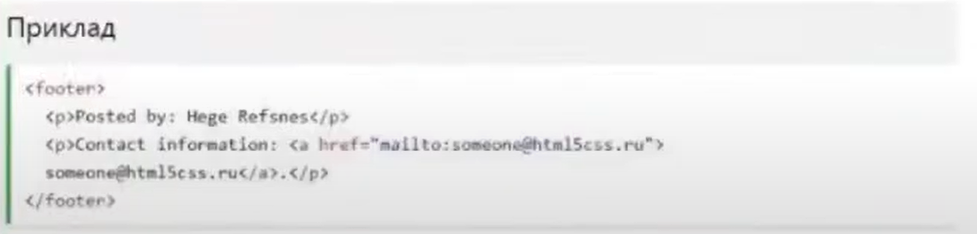

HTML5 Симантичні елементи
Симантичний елемент чітко описує його значення як для бразура, так і длярозробника.
Приклади не сементичних елементів:<div> і <span>-нічого не говорять про його вміст.
Приклади сементичних елементів: <form>,<table> і <article>-чітко описуєйого зміст.
Підтримка бразерів
Семантичні елементи HTML5 підтримуються у всіх сучасних браузерах.
Крім того,ви можете "навчити" старих бразерів, як обробляти "невідомі елементи".
Прочитайте це в підтримці бразура HTML5.
До гориНові сементичні елементи в HTML5.
HTML5 пропонує нові сементичні елементи для визначення різних частин веб-сторінки:
- <section>
- <article>
- <header>
- <footer>
HTML5 <section> елемент
Елемент <section> визначає розділ в документі.
Згідно з документацією в3к'с HTML5: "розділ представляє собою тематичне угрупування контенту, зазвичай з заголовком".
Домашня сторінка може бути розділена на розділи для ознайомлення, зміст і котактної інформації.
До гори
HTML5 <article> елемент
Елемент <article> визначає незалежний, автономний вміст.
Стаття повинна мати сенс самостійно, і вона повинна мати можливість читати його незалежно від іншої частини веб-сайту.
Приклади того, де можна використовувати елемент <article>:
- Повідомлення на форумі
- Блозі
- Газетна стаття
До гори
HTML5 <header> елемент
Елемент <header> задає заголовок для документа або розділу.
Елемент <header> повинен використовуватися в якості контейнера для вступного змісту.
В одному документі може бути кілька елементів <header>.
У наступному прикладі визначається заголовок до статті:
До гори
HTML5 <footer> елемент
Елемент <footer> вказує нижній колонтитул для документа або розділу.
Нижній колонтитул зазвичай містить автора документп, інформацію про авторське право, посилання на умови використання, контактні дані і т.д.
В одному документі може бути кілька елементів <footer>
До гори